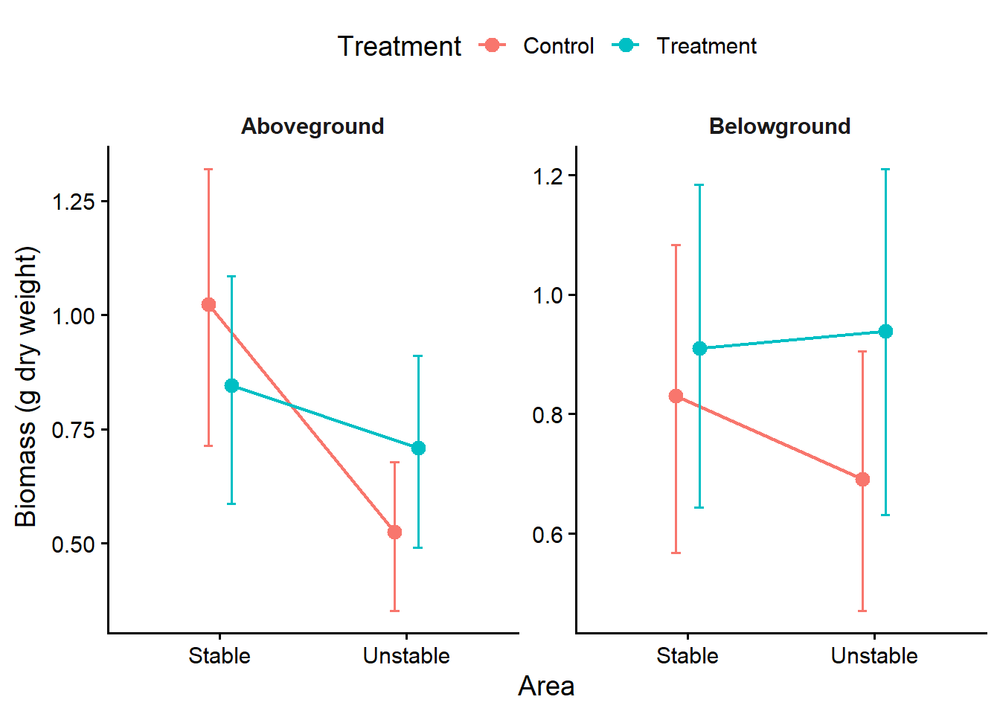
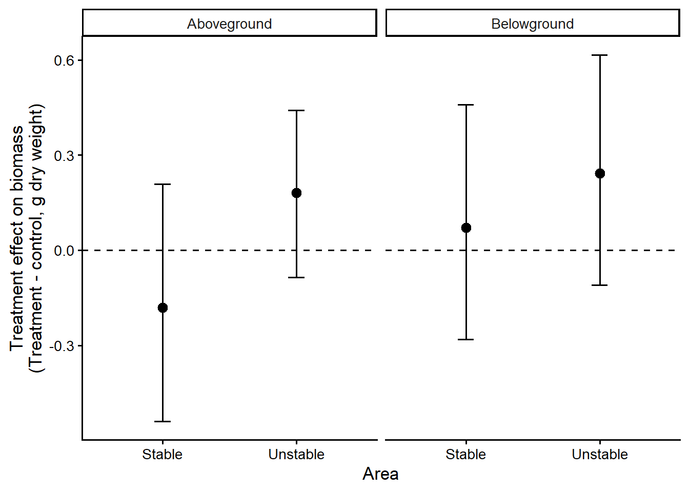

Sampling results
REWRITE · BB Experiment
Seagrass biomass at the September harvest
Aboveground and belowground dry biomass was recorded separately for each of the 24 inner-core samples, providing six control and six treatment observations in each meadow area.
Raw dry mass ranged from 0.159 to 2.784 g per inner core. Aboveground biomass was more variable in the stable meadow, where the control and treatment medians were 0.828 and 0.705 g per core, respectively. In the unstable meadow, median aboveground biomass was 0.517 g in control cores and 0.833 g in treatment cores. Belowground medians were 0.819 and 0.930 g in the stable control and treatment cores, and 0.576 and 0.862 g in the corresponding unstable groups.
Aboveground-to-belowground biomass ratio
The aboveground-to-belowground biomass ratio describes the allocation of dry biomass within each core. A ratio above one indicates that aboveground biomass exceeded belowground biomass, whereas a ratio below one indicates greater belowground biomass. Core 3NS was excluded from this display because its ratio of 5.52 was markedly separated from the remaining observations and compressed their graphical distribution. Among the displayed cores, median ratios were 0.79 and 1.11 in stable control and treatment cores, respectively, compared with 0.68 and 0.99 in unstable control and treatment cores. Aboveground biomass exceeded belowground biomass in three of the six treatment cores in each meadow, two of the five displayed stable control cores, and two of the six unstable control cores.
Bayesian modelling of the treatment effect
Aboveground and belowground biomass were analysed jointly using a Bayesian lognormal mixed-effects model. Treatment, biomass compartment, meadow area and all interactions were included as population-level effects, while a random intercept for each experimental core accounted for the paired compartment measurements. The model was estimated from four chains and 12,000 post-warmup posterior draws. All parameters had \(\widehat{R} \leq 1.004\), the minimum bulk effective sample size was 1,846, and no divergent transitions were detected.

Posterior median aboveground biomass in the stable meadow was 0.84 g in treatment cores and 1.02 g in control cores. Belowground biomass was similar between the two groups (0.91 and 0.83 g, respectively). In the unstable meadow, posterior medians were higher in treatment cores for both aboveground biomass (0.71 versus 0.52 g) and belowground biomass (0.94 versus 0.69 g). The credible intervals nevertheless overlapped substantially in every comparison.

In the stable meadow, the estimated treatment effect was -0.18 g (80% CrI -0.54 to 0.21; posterior probability of a positive effect = 26%) for aboveground biomass and 0.07 g (80% CrI -0.28 to 0.46; posterior probability of a positive effect = 60%) for belowground biomass. The posterior therefore provided little evidence of a consistent biomass increase following L. orbiculatus addition in this meadow. In the unstable meadow, treatment effects were positive for both aboveground biomass (0.18 g (80% CrI -0.09 to 0.44; posterior probability of a positive effect = 82%)) and belowground biomass (0.24 g (80% CrI -0.11 to 0.62; posterior probability of a positive effect = 81%)). These posterior probabilities indicate a directional tendency towards greater biomass following addition in the unstable meadow, although the 80% credible intervals included zero for both compartments. Notably, the posterior median treatment effect was greater for belowground than for aboveground biomass in both meadow areas: the stable meadow showed a small positive belowground response despite a negative aboveground estimate, while the unstable meadow showed a larger positive estimate belowground than aboveground.
The contrast between meadow areas is consistent with a context-dependent response: additional L. orbiculatus may be more beneficial where meadow persistence is lower and environmental stress is potentially greater. The comparatively stronger response of belowground biomass is also consistent with the proposed facilitation mechanism. Roots and rhizomes are directly exposed to porewater sulfide [@Frederiksen2008], and sulfide oxidation by lucinid-associated symbionts could therefore benefit belowground tissues most directly [@Lim2019]. However, the posterior uncertainty remains substantial, reflecting the six experimental stations available per treatment and meadow. The biomass results support a possible positive treatment response in the unstable meadow and a potentially stronger response belowground, but the 80% intervals still overlap the null effect. Biomass alone cannot attribute this pattern to sulfide removal; evaluation of the proposed mechanism requires the sediment-sulfide measurements and the final abundance of L. orbiculatus within each enclosure.